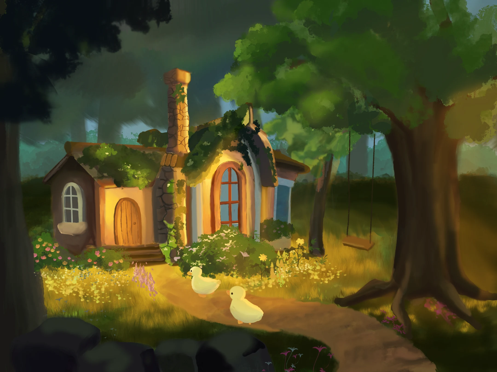
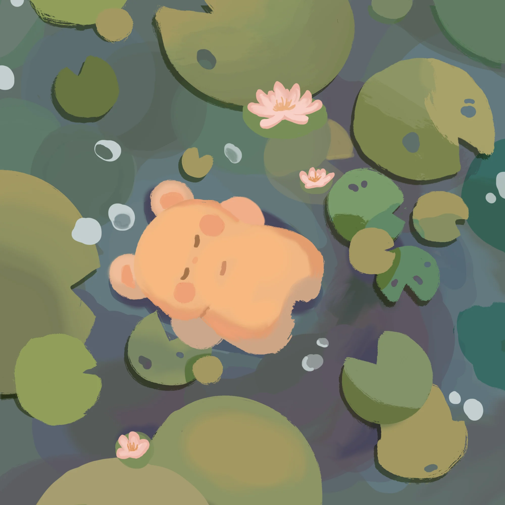

Software Engineer Intern @ Capital One
Summer 2026On the Cloud Operations Resilience Engineering (CORE) team, built multi-region active-active failover for an AWS platform and fixed a cross-region bootstrap deadlock, cutting recovery time by 92%.

I'm Alicia Ma, a junior at UC Berkeley studying CS + IEOR (Industrial Engineering & Operations Research). I love creating things, whether it's with code or a pencil, and I'm happiest finding creative solutions to tricky problems. Scroll to see my experience, projects, and more about me!
On the Cloud Operations Resilience Engineering (CORE) team, built multi-region active-active failover for an AWS platform and fixed a cross-region bootstrap deadlock, cutting recovery time by 92%.
Built an investment research dashboard for tracking AI-native startups.
Built a RAG chatbot that finds relevant JIRA tickets from natural-language questions, plus the evaluation pipeline that scores its answers.
Built an internal AI search system over thousands of data tables, used by thousands of employees, with REST endpoints and automated data refreshes.
A short description of what this project does and why it's cool goes here.
A short description of what this project does and why it's cool goes here.
A short description of what this project does and why it's cool goes here.
I love creating things, whether that's with code or a pencil. To me, engineering a system and finishing a painting aren't so different: both start with a messy idea, take a lot of patient iteration, and end with something that works and feels right. That's what I look for in my work, from making cloud infrastructure recover from failures on its own to building AI search tools that help people find exactly what they need.
I'm a junior at UC Berkeley double majoring in computer science and industrial engineering & operations research, which gives me both sides of that: the tools to build things and the analytical lens to make them better. I'm originally from Orange County.
When I'm not coding, I'm usually drawing or painting (the pond you're looking at is hand-painted!), listening to music, cafe hopping with friends, or out on a hike, always on the lookout for a cozy new spot to sketch.
click any piece to take a closer look




@chonkeymonkey on beli

📍 berkeley
i brought the charcuterie!

📍 san francisco
worth waking up at 6:30 am for

📍 san francisco
banana cream tart and shakshuka are a must try